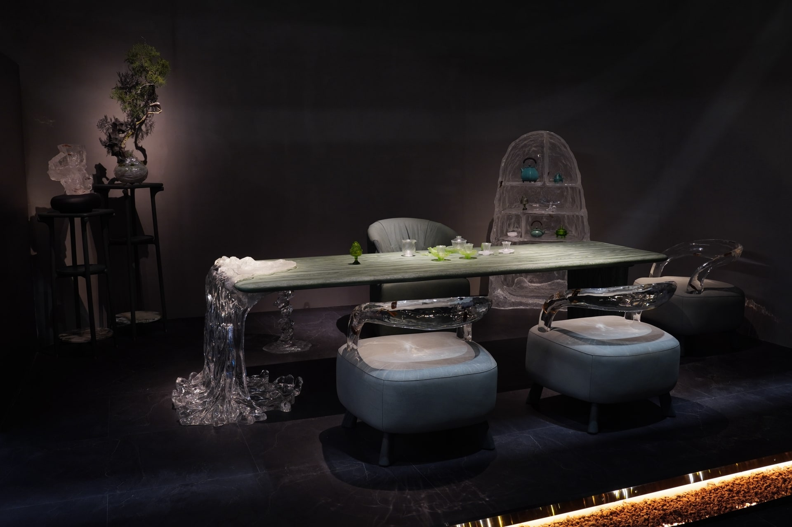
茶荟家居 × GORDON GU
展会视觉
与现场落地
品牌内容，进入真实现场。
01项目概述
品牌内容，
进入展会现场
围绕茶家具与艺术家居的展会展示，负责产品图册、品牌信息物料、邀请函及屏幕内容的相关工作。
个人职责为平面视觉与内容物料，不含家具产品及展台空间设计。
02展前邀约
CHAHUI茶荟家居
邀请函
以器物赴一场
关于生活的邀约
从一份邀约，
开始了解品牌
沿用既有邀请函的视觉方向，
以产品画面与简洁信息建立第一印象。
03产品图册
产品图册与内容编排
以下为品牌资料版式参考，待替换本人负责的展会图册原稿。
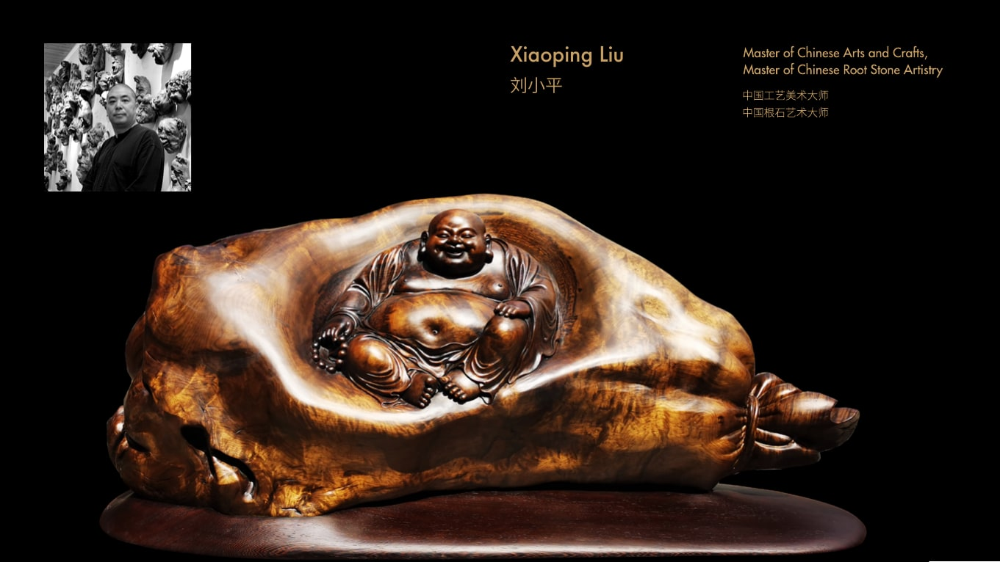
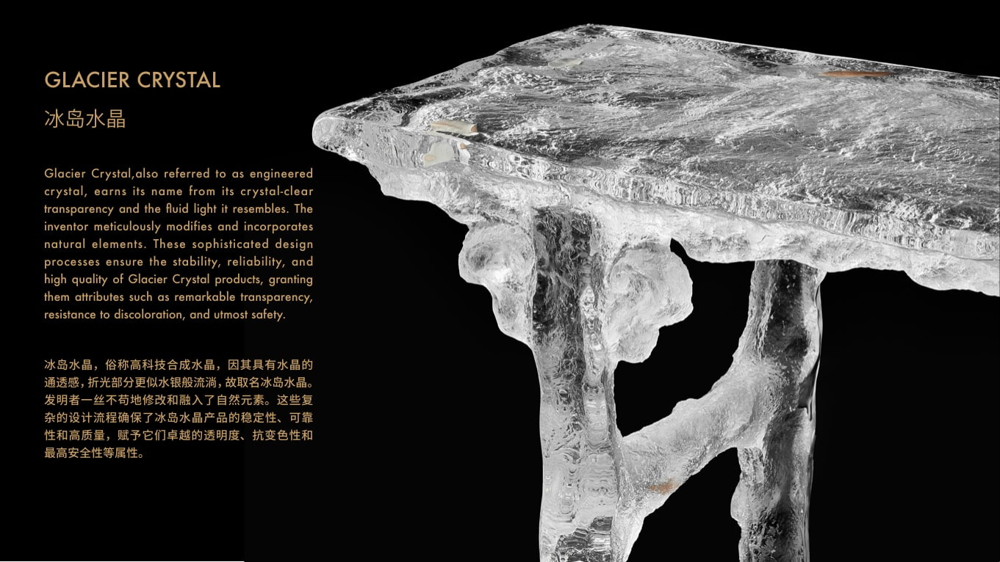
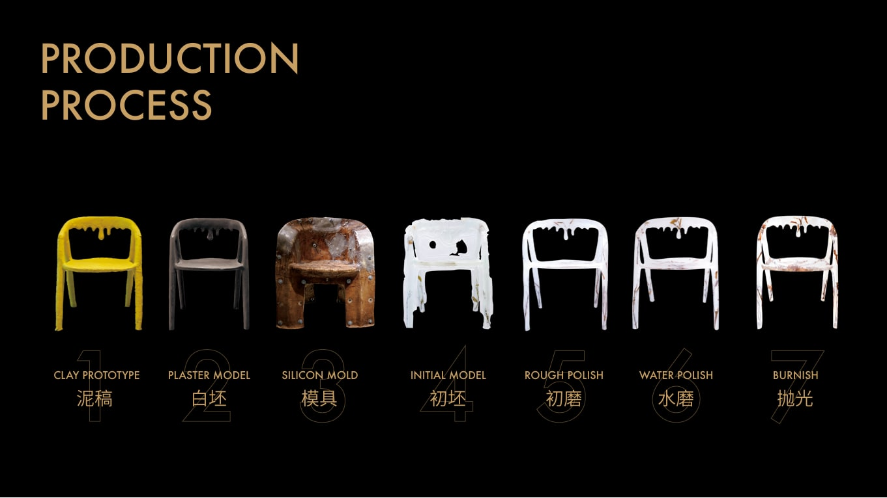
04现场信息
产品信息，落到现场
设计师介绍与产品信息，成为观展时可以就近阅读的内容。
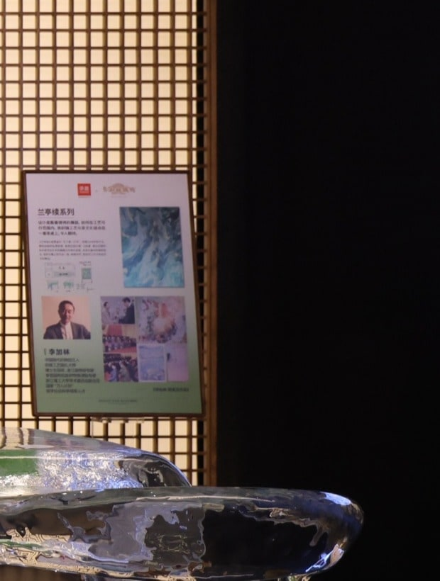
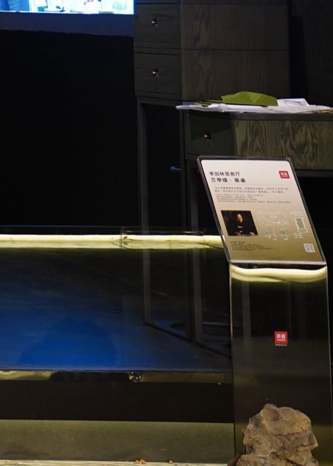
此处直接展示实际应用；平面源稿待整理补充。
05墙面视觉
墙面与公共区域
从展位内的品牌信息，到公共区域的宣传物料。
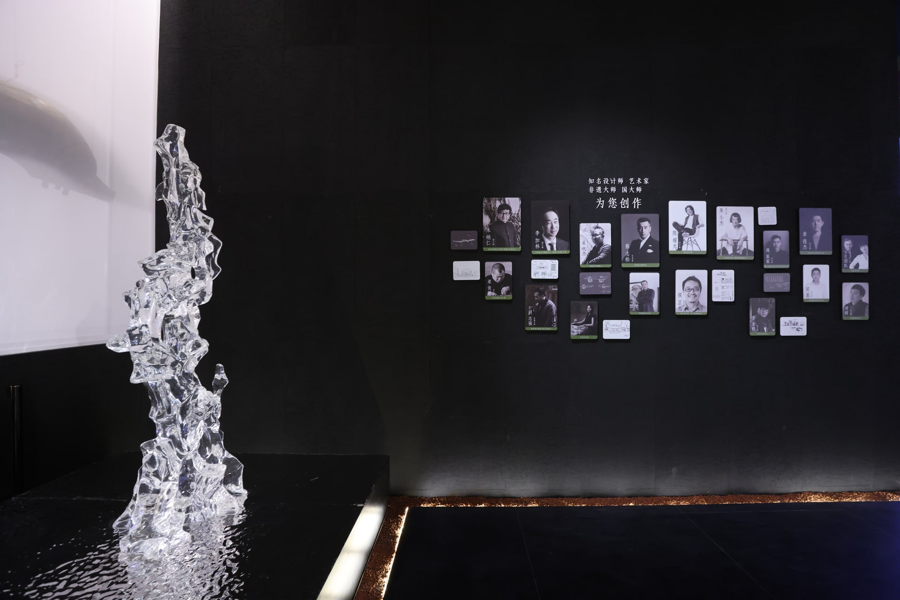
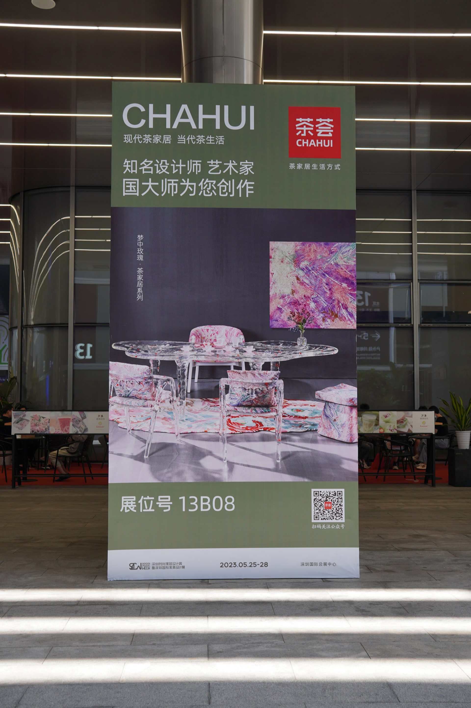
06产品影像
现场产品影像
参与拍摄的产品视频曾用于展会屏幕播放。
产品视频整理中
07多地现场
多地展会现场
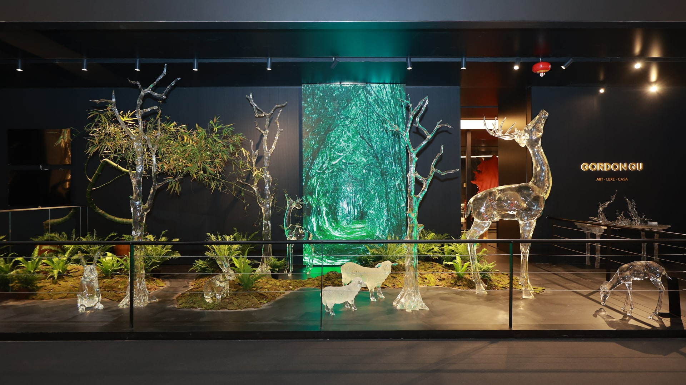
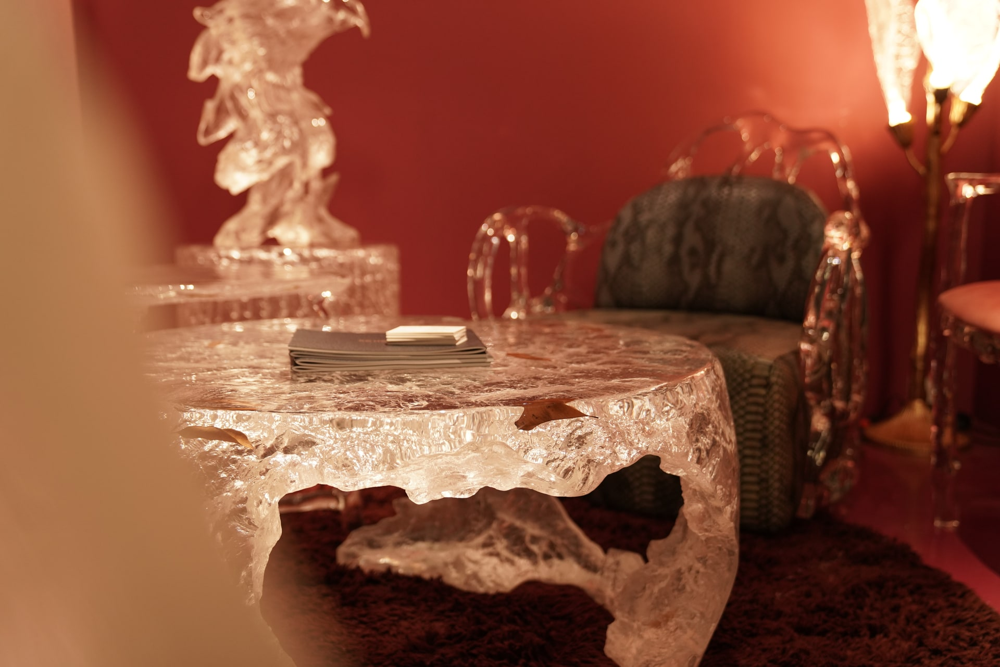
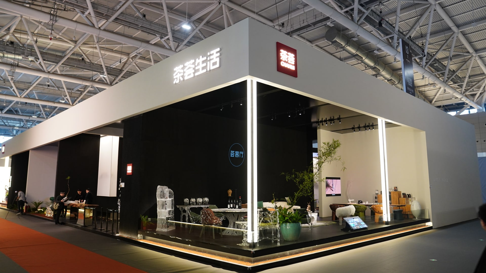
08 / 项目收尾
让视觉进入
真实现场
展会平面视觉 / 产品内容 / 现场应用